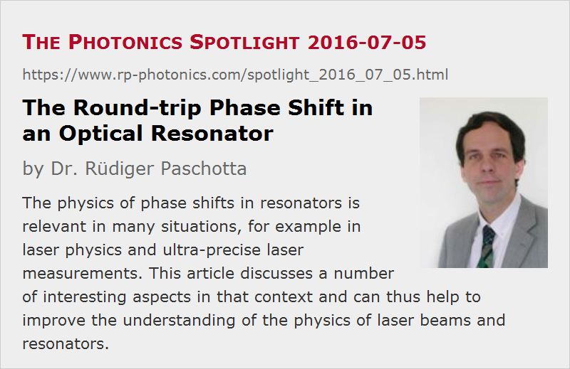

The Round-trip Phase Shift in an Optical Resonator
Posted on 2016-07-05 as a part of the Photonics Spotlight (available as e-mail newsletter!)
Permanent link: https://www.rp-photonics.com/spotlight_2016_07_05.html
Author: Dr. Rüdiger Paschotta, RP Photonics Consulting GmbH
Abstract: The physics of phase shifts in resonators is relevant in many situations, for example in laser physics and ultra-precise laser measurements. This article discusses a number of interesting aspects in that context and can thus help to improve the understanding of the physics of laser beams and resonators.

In many situations, one needs to consider or calculate the round-trip phase shift in an optical resonator, i.e., the total optical phase shift experienced in a complete resonator round trip. Here, one can encounter various interesting aspects, which I discuss in the following. You may have some fun thinking about these things and at the same time improve your understanding of light beams and optical resonators.
Is It a Well Defined Quantity?
Very often, one considers the round-trip phase shift along the resonator axis. In reality, however, we do not have a ray circulating in the resonator, but a light beam (e.g., a laser beam) with a finite transverse extension. One may now ask whether the on-axis phase shift is really meaningful; after all, part of the light travels somewhat away from the axis, and one might expect that it experiences a different phase shift there; for example, a lens in the resonator would cause a maximum phase shift on the axis and lower phase shifts away from it. Also, the circulating light has some finite divergence, i.e., it covers some range of propagation angles, and one could imagine that these should have an impact on the round-trip phase shift.
It is instructive now to consider resonator modes. By definition, these are field configurations which fully reproduce themselves after a complete resonator round trip. For such a mode, the round-trip phase shift is necessarily an integer multiple of 2π – just because by definition we have a self-reproducing field configuration. This holds for fundamental (axial) modes as well as for higher-order modes. Here, it is perfectly clear that the on-axis round-trip phase shift is representative for the phase shift experienced along any ray which is, for example, transversely shifted away from the resonator axis. This is true despite possible transverse variations of phase shifts e.g. at lenses or curved mirrors: after each complete round trip, the wavefronts must stay unchanged – otherwise, we would not be dealing with a resonator mode.
Now, different modes of a resonator can have different round-trip phase shifts – differing by integer multiples of 2π. You may now wonder what is the round-trip phase shift of some optical field which is a superposition of different modes, having different round-trip phase shifts: is it perhaps some kind of weighted average, no longer restricted to integer multiples of 2π? No, it isn't: in general, the round-trip phase shift of such a superposition is not a defined quantity. After all, how should one define the phase shift of a beam with arbitrarily crumbled wavefronts? Note also that in general we are not dealing with a monochromatic field anymore: different modes generally have different mode frequencies. So the round-phase shift is not a well defined quantity for arbitrary beams, but it is defined for resonator modes.
One may actually try to excite a resonator mode with a mode-matched monochromatic beam coming from outside, hitting a partially transparent mirror of the resonator. In that case, the optical frequency is controlled from outside and is no longer restricted to discrete mode frequencies. But how about the round-trip phase shift in such a case? It turns out that it is still an integer multiple of 2π; the external field causes a phase change where it enters the resonator. In that way, you can have discrete values of the round-trip phase shift despite possible continuous variations of the optical frequency.
The Round-trip Group Delay
In many situations, the round-trip time of an optical resonator is relevant; for example, the inverse of that is the pulse repetition rate from a mode-locked laser in case that a single pulse is circulating in its resonator. Many would think that you can calculate this simply as the round-trip distance divided by the velocity of light – possibly taking into account its reduction in optical components, based on their refractive index. This is not exactly true, however. A useful and meaningful definition of round-trip time is the round-trip group delay; it tells you how much time a short (but not too short) optical pulse requires for one round trip – looking at the pulse maximum. Generally, the group delay is the derivative of the round-trip phase shift with respect to the angular frequency ω = 2π ν. In case of resonator modes, you cannot really calculate that derivative since we have only modes with discrete optical frequencies and phase shifts. You may, however, look at a pair of neighbored resonator modes, differing by 2π in their round-trip phase shift and by δν in terms of optical frequency. From that, you can get the round-trip group delay as Tg = 2π / δω = 1 / δν – it is just the inverse mode spacing in terms of optical frequency. Interestingly, the mode spacing is influenced not only by the geometrical length, but also by chromatic dispersion and in principle even by wavelength-dependent diffraction effects. (See the encyclopedia article on waveguide dispersion for more details in that direction.)
Taking different pairs of neighbored modes, you will generally obtain slightly different values of the round-trip group delay: it is not just a constant value for a given resonator. Here, you can see how chromatic dispersion can make it difficult to keep the circulating pulse together over many resonator round trips; one therefore often uses some kind of dispersion compensation for mitigating such effects. It must be said, however, that zero chromatic dispersion is not always the best to have, since we also often have some substantial nonlinear effects in mode-locked lasers, which can nicely be combined with some amount of chromatic dispersion. By the way, that also implies that resonator modes, not taking into account any nonlinear effects, are not telling you everything about light propagation in lasers.
Detecting Small Changes of Round-trip Phase Shifts
Imagine that you have some small temperature change affecting the refractive index of some crystal or glass piece within a resonator; alternatively, you could have some change of the round-trip length caused by thermal drifts of mechanical parts or by whatever else. If monochromatic light with a fixed optical frequency were circulating in the resonator, one would then obtain a somewhat changed round-trip phase shift. If the resonator is a laser resonator, the situation is different: the laser will continue to operate on a resonator mode (if not on multiple resonator modes simultaneously), and the resonator mode frequency (or frequencies) will automatically adapt such that the round-trip phase shift stays constant (for each mode).
That can actually be quite convenient for measuring such influences: one can easily detect tiny changes of optical frequencies and therefore tiny influences on the optical field circulating in a laser resonator. As an example, consider a small 1064-nm laser with a 10-GHz mode spacing of its linear resonator. If an end mirror of that resonator is displaced by only 1 nm in the beam direction, this will change the mode frequencies by 10 GHz · (2 · 1 nm / 1064 nm) = 18.8 MHz. If the laser's emission linewidth is not too large, one should be able to detect such a change of optical frequency. Note that single-frequency solid-state lasers often have a linewidth only of a few kHz.
Another thought: if you can get a laser to operate on two modes having different polarization directions, and you can detect a beat note of the corresponding optical frequencies, that beat frequency will extremely sensitively react to the slightest birefringence introduced into your intracavity laser beam.
Some Other Articles
You might also be interested in some older articles on "The Role of Diffraction in Optical Resonators", "The Resonator Mystery" and "Are Compact Resonators More Stable?".
This article is a posting of the Photonics Spotlight, authored by Dr. Rüdiger Paschotta. You may link to this page and cite it, because its location is permanent. See also the RP Photonics Encyclopedia.
Note that you can also receive the articles in the form of a newsletter or with an RSS feed.
Questions and Comments from Users
Here you can submit questions and comments. As far as they get accepted by the author, they will appear above this paragraph together with the author’s answer. The author will decide on acceptance based on certain criteria. Essentially, the issue must be of sufficiently broad interest.
Please do not enter personal data here; we would otherwise delete it soon. (See also our privacy declaration.) If you wish to receive personal feedback or consultancy from the author, please contact him e.g. via e-mail.
By submitting the information, you give your consent to the potential publication of your inputs on our website according to our rules. (If you later retract your consent, we will delete those inputs.) As your inputs are first reviewed by the author, they may be published with some delay.
|  |
If you like this page, please share the link with your friends and colleagues, e.g. via social media:
These sharing buttons are implemented in a privacy-friendly way!